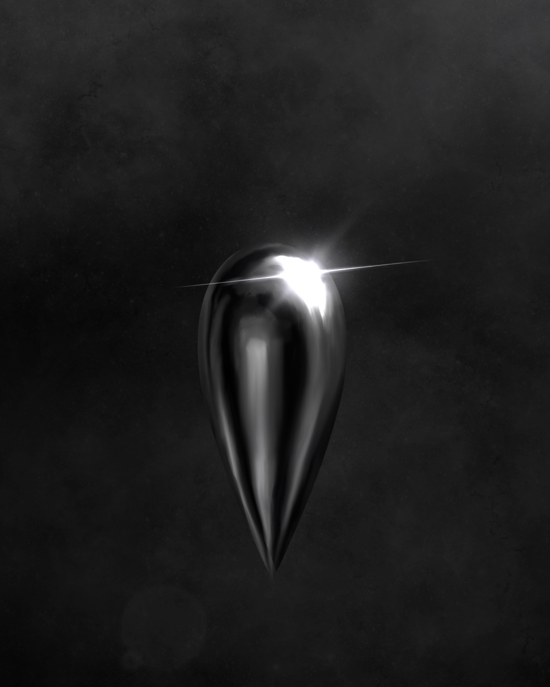
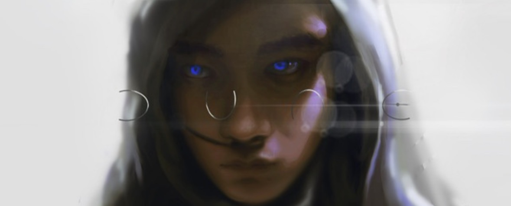
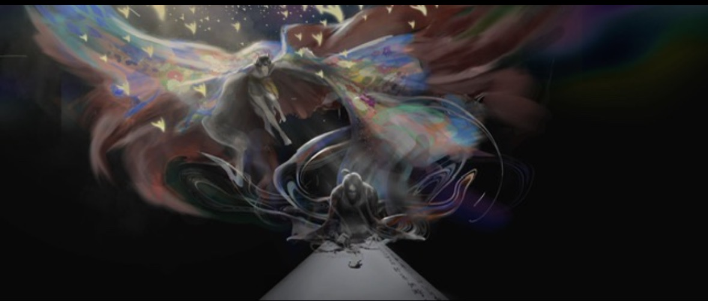

LI XIANGYU / DIGITAL COLLAGE
HOME
WORKS
PITUITARY
ILLUSTRATIONS
ABOUT
ORIGINAL ARTWORK
ILLUSTRATIONS.
自分で描いたオリジナルイラストレーションです。人物や抽象的な形、光と色彩を使って、独自の世界観を表現しています。

01 / ABSTRACT FORM

02 / CHARACTER

03 / FANTASY